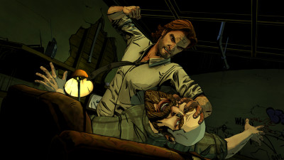
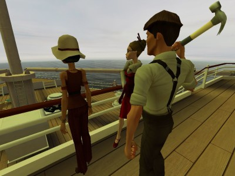

Could Machinima Bridge The Gap Between Game And Film? (2001)
_This is another in my series of republished articles from just after I founded Machinima.com, which subsequently became the Machinima channel. This one’s from quite early on, in the days when we were all figuring out this “Machinima” thing, and just around the time I was working on a AAA games project with EA, in 2001.
I’ve picked this editorial because it’s relevant to the games, Machinima and VR world of 2015 in two ways: first, the “Telltale” style of game (such as “Wolf Among Us”, pictured), which is very heavily Machinima-reliant, and secondly, Virtual Reality filmmaking, which no less an authority than Roger Ebert suggested should be predominantly an interactive experience with the viewer as protagonist.
Enjoy the article - I’ll add some thoughts from 2015 at the end_
One of the stranger things about Machinima as a whole is the fact that, in some forms, it’s very close to not being a traditional recorded medium. Quite why that’s so important isn’t immediately obvious until you think about it: whilst some forms of Machinima, like so-called “demo edited” Machinima (using fixed-frequency updates of position in the world) are close enough to being recorded to make no difference, making no use of in-game physical laws to determine their playback, other forms (particularly scripted forms like Unreal Movie Studio films) are, in some ways, closer to a performance art than they are to any form of traditional mass media, using computer “actors” to enact a “script” much of whose action is determined by actions within the game at the time of playback.
Physical laws are called upon not at recording time, to generate a static and unchanging product, but at runtime: sometimes, even, the action in the film isn’t absolutely set until it is played back on the user’s computer: it’s a Schrodinger’s film.
But what does that mean for us in practical terms? Well, I’m not entirely sure yet, but this duality in our artform is one of the most undervalued and under-studied aspects of Machinima, and I’ve got a sneaking feeling that in the long run it might turn out to be one of the most important.
Why? Well, because it means that Machinima blurs the line between a film and performance art, and between Machinima and the game, as the two get closer together- indeed, the same scripted sequencing techniques that we use to create Machinima are often used for the creation of interactive sequences within games written using the same game engine, intended to be played back in a situation where the player is not the viewer but the protagonist, and can in some cases even alter the outcome of these mini-dramas.
What about mixtures of games and pre-scripted sequences unlike anything we’ve seen before- say, a recreation of the Battle of Pelenor Fields at the end of Lord Of The Rings, with some people playing the totally pre-scripted roles of the main characters and others playing lesser soliders on the battlefield, able to freely make up their own smaller stories surrounding the main battle? Let’s blur the lines- why do some people get to play the characters on our screens, whilst most of us only get to watch them? Why can’t you control the storyline of an interactive event and still create an enjoyable experience?
About the only two forms I know that have seriously experimented with these ideas before are role-playing and theatre- but both of them are very limited by their medium- live, real life. Now, I think, we’ve got something that doesn’t have those limits, that doesn’t have as many rules, and certainly has less than we thought it did. There’s a great confluence coming in the arts, centered around the Internet, and I think that by its blurring of the recording/performance/interaction boundaries, Machinima might be one of the greatest parts in it.
Machinima as it stands is a great tool- it’s fantastic purely as a film-making medium for low-budget film-makers- but that’s not the only reason it’s got fantastic potential. There are whole new artforms out there we haven’t discovered yet, and I think that Machinima could be the signal, the fizzing blue touchpaper that says that the 21st Century’s storytelling media are just beginning to be discovered.
_As I said above, two words: Telltale Games.
If you haven’t played one of their amazing games yet, do so - I recommend Wolf Among Us as both very good and a bit less stressful than their other titles (based on The Walking Dead and Game Of Thrones).
Telltale’s schtick is pretty much very high quality Machinima matched with a lot of decision points for the player. There’s some conventional adventure game stuff too - walk around a location, examine things - but it’s vastly overshadowed by the film-with-decision-points sections where the game really comes alive.
So, getting past the “hah, I was right!” element - which I’ll admit to being quite pleased about - in what way is this not what my article from 2001 was talking about?
Well, first up, Telltale’s games are a solo experience. Short of RPG guilds on MMORPGs, I’m really not aware of any multiplayer game that attempts to have the players participate in a dramatic fashion. Star Wars The Old Republic allows groups to make choices in story-based missions, but it’s more a simulation of the group as a single entity than any kind of all-players-involved-in-drama experience.
That’s probably largely because any multiplayer experience is going to be very heavily dependent on players doing their part, and as anyone who has run a dungeon or raid in WoW can tell you, that’s a good way away from being a sure thing. A very few games are experimenting with enlisting players in the drama en masse - notably the intriguing The Ship (pictured below) - but it’s certainly not ready for prime-time yet.

Secondly, I radically underestimated the complexity and expense of creating these interactive Machinima pieces, at least with 2015 technology. I loved Wolf Among Us, and strongly considered trying to create something similar - but then I looked into the budget for that project, which was around $1 million.
At this point we get back to the paradox of Machinima. It’s only cheap if you’re using game-based Machinima techniques, where you’re making your film in a world created for a game. If you’re creating original assets, it’s essentially a CGI movie and costs about as much.
Wolf Among Us is remarkably cheap for an animated CGI experience, given its length - it’s around 10 hours. That’s $100k per hour, which for animation is NOT much. But still, it’s outside the realms of what most people would consider “garage” storytelling.
Any other thoughts on how my 2001 spraffing has translated into 2015? Post ‘em below!_